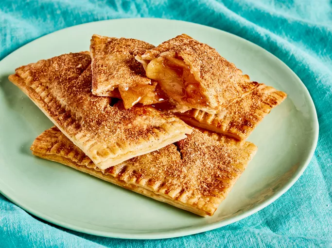

Home
Apple Pie

Description
Make McDonald's apple pies right at home with this copycat recipe. Better than anything you can get from the drive-thru!
Ingredients
- 2 cups peeled, chopped (1/2-inch) apples (from 2 small [12 ounces total] mixed variety apples)
- 1 1/2 teaspoons fresh lemon juice (from 1 medium lemon)
- 2 tablespoons light brown sugar
- 3 tablespoons granulated sugar, divided
- 1 teaspoon ground cinnamon, divided
- 1 tablespoon unsalted butter
- 1 1/2 teaspoons cornstarch
- 1/2 teaspoon vanilla extract
- 1 (14.1 ounce) package refrigerated pie crust, softened according to package directions (such as Pillsbury)
- 1 large egg, beaten
- Cooking spray
Steps
- Gather all ingredients.
- Stir together apples and lemon juice. Sprinkle with brown sugar, 2 tablespoons of the granulated sugar, and 1/2 teaspoon of the cinnamon in a medium bowl; set aside until apples release some juice, about 5 minutes.
- Heat butter in a medium saucepan over medium-high until melted and bubbling. Add apple mixture and reduce heat to medium; cook, stirring occasionally, until apples are softened and juices are just slightly reduced, 6 to 9 minutes. Stir in cornstarch and vanilla; cook, stirring constantly, until mixture is bubbling and thickened, about 1 minute. Remove from heat and let stand until slightly cooled, 15 to 30 minutes.
- Roll out one refrigerated pie crust into a 12-inch circle.
- Cut into 8 (4x2-inch) rectangles, discarding scraps or reserving for another use. Cover cut dough with plastic wrap and repeat with remaining pie crust. Place 8 dough rectangles on a work surface, and lightly brush with egg all the way to edges.
- Leaving any excess juices in the bowl, spoon about 1 1/2 tablespoons of apple filling in center of each rectangle with a 1/4-inch border on all sides.
- Top with remaining dough rectangles, slightly stretching as needed to align edges with base dough. Crimp edges of rectangles using the tines of a fork and brush tops lightly with egg.
- Preheat an air fryer to 350°F for 5 minutes. Meanwhile, make 3 evenly spaced diagonal cuts on top of each pie to vent.
- Mix together remaining 1 tablespoon sugar and remaining 1/2 teaspoon cinnamon in a small bowl; sprinkle on top of pies.
- Lightly coat air fryer basket with cooking spray. Add 4 pies to basket, and bake until golden brown and crisp, 14 to 17 minutes. Repeat with remaining pies.
- Serve warm.